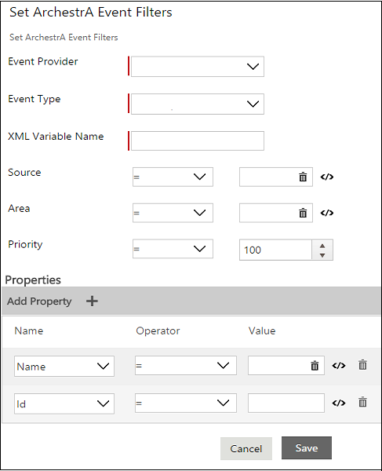
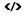

No
Use this property to filter the ArchestrA events. Whenever an event occurs, it will check this filter, and if a match is found, the activity will be alerted.
The following image shows the Set ArchestrA Event Filters properties window:

Enter the following details:
Based on the data available in the ArchestrA Event master list, the Event Provider list is populated. You can add other event providers to this master list, if required.
Example of Event Providers are InBatch Server or Avantis.
To go to the ArchestrA Event master list, click the Menu button, click Tools, and then click ArchestrA Events. The ArchestrA Events page appears which displays the available master list. For more information, see User Guide > Enterprise Console > ArchestrA Events.
It is the type of event which defines the properties of the event.
For InBatch Server, Batch is an event, and possible values for Batch events are such as, BatchId, BatchSize, CampaignId, EventCode, EventCodeName, and LotId.
Based on the data available in the ArchestrA Event master list, the Event Type list is populated for the selected Event Provider. You can add other event types for the event provider, if required. You can view the properties of the event type in the Properties grid towards the lower section of the Set ArchestrA Event Filter window.
If an ArchestrA Wait for Event activity is deleted from a workflow, the associated XML variable is retained. However, we recommend to not use the same XML variable for another ArchestrA Wait for Event activity as the XML variable properties gets overwritten with every workflow execution which will lead to unexpected behavior of the workflow. So, if there are multiple ArchestrA Wait for Event activity in a workflow, each activity will have their own XML variable.
Select the appropriate operator from the operator drop-down list.
Click the icon to define an expression in the Expression Editor.
For more information about Expression Editor, see User Guide > Process Designer > Setting Activity and Link Properties > Using the Expression Editor.
Note: If you have defined an expression, then the icon is displayed. Click this icon if you want to remove the defined expression.
The Area object plays a key role in alarm and event distribution. All objects belong to an Area. Areas can contain sub-Areas. Alarm and event clients are configured to subscribe to a set of Areas.
Click the icon to define an expression in the Expression Editor.
For more information about Expression Editor, see User Guide > Process Designer > Setting Activity and Link Properties > Using the Expression Editor.
Note: If you have defined an expression, then the icon is displayed. Click this icon if you want to remove the defined expression.
Priority, which is an integer value from 1 to 999 indicating the severity of the alarm which raises an event. An alarm priority of 1 is most urgent and 999 least urgent.
Based on the data available in the ArchestrA Event master list, the properties of the Event Type list is populated. You can add other properties of the event type, if required.
Click the icon corresponding to a property, to define an expression for that property in the Expression Editor.
For more information about Expression Editor, see User Guide > Process Designer > Setting Activity and Link Properties > Using the Expression Editor.
Note: If you have defined an expression, then the icon is displayed. Click this icon if you want to remove the defined expression.
Limitations: